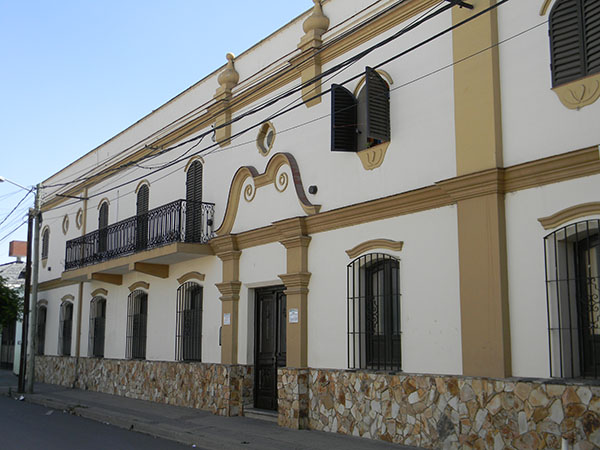
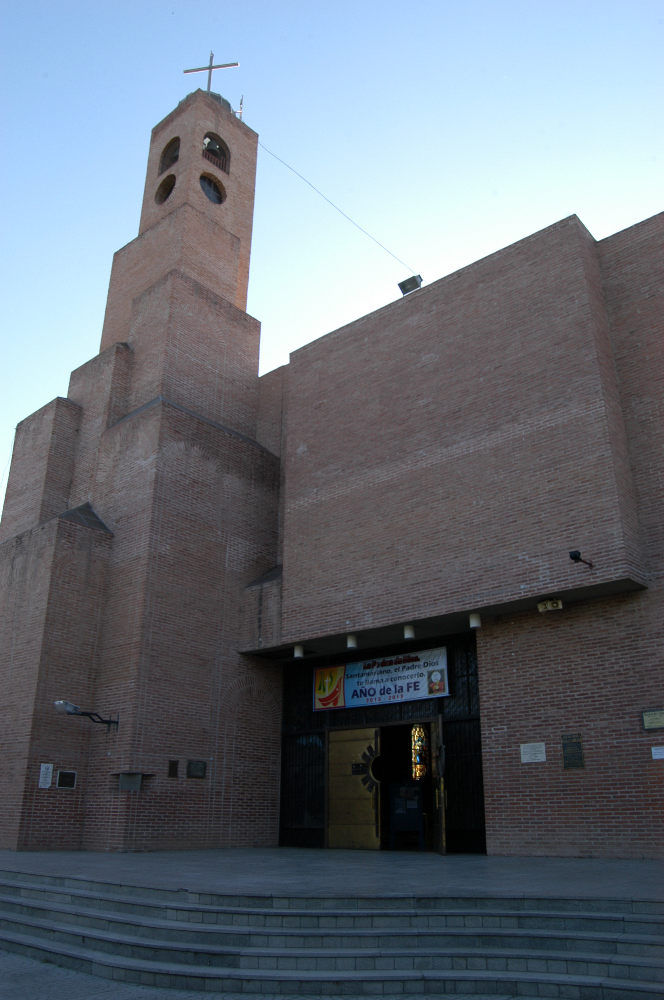
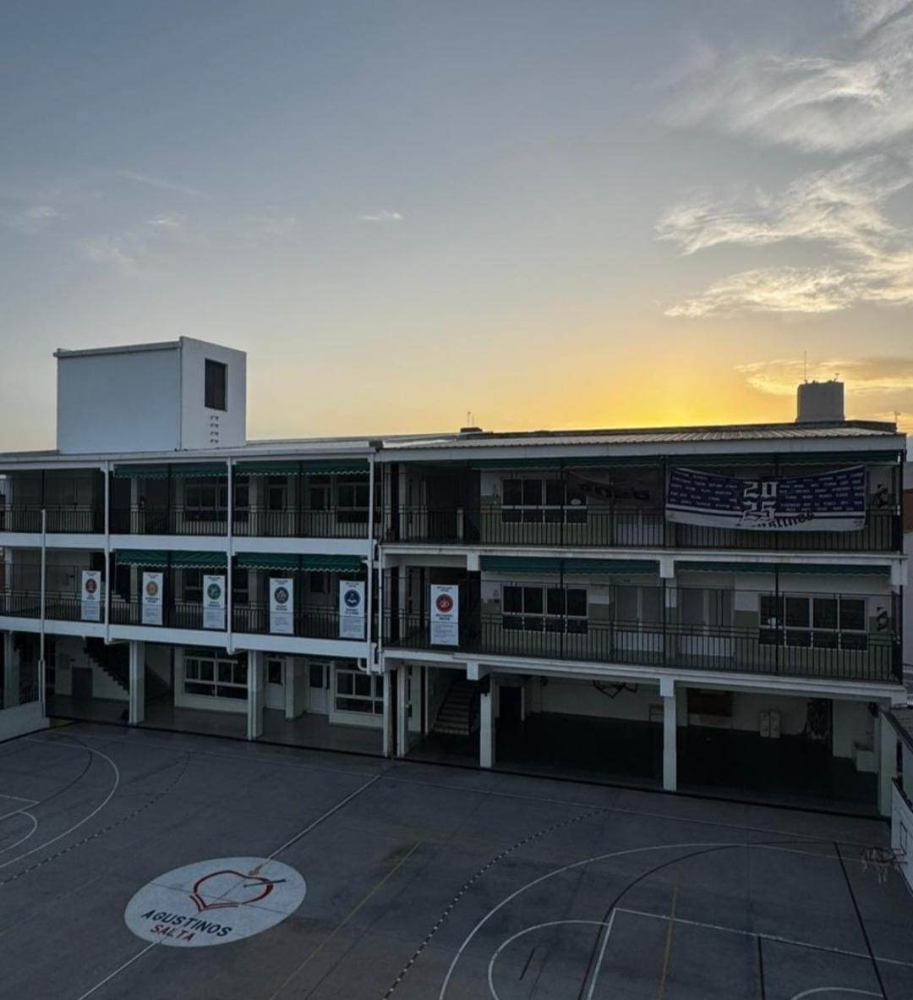
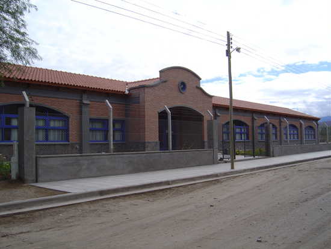
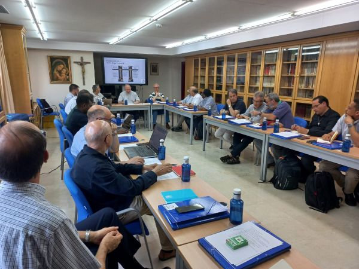
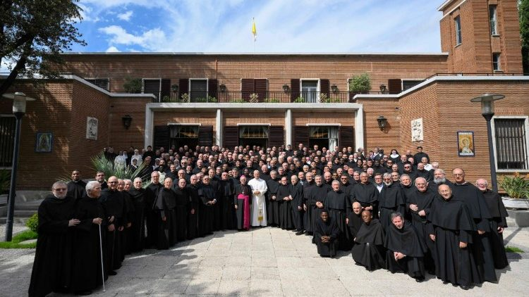

Bienvenidos a la Orden de San Agustín Argentina
Somos una comunidad de hermanos que, inspirados por la vida y obra de San Agustín, buscamos a Dios en la comunión de bienes y corazones. Nuestra misión es servir a la Iglesia y a la sociedad a través de la educación, las parroquias y las obras sociales, llevando el mensaje de Cristo a cada rincón de nuestra patria.
"Ama y haz lo que quieras"
— San Agustín
Los invitamos a recorrer nuestro sitio y descubrir nuestra espiritualidad y compromiso.
Nuestra Red Agustiniana
Parroquias

Parroquia San Agustín
Buenos Aires
Parroquia San Agustín
Av. Las Heras 2560
Celebraciones diarias y grupos pastorales.

Parroquia San Martín de Tours
Buenos Aires
Parroquia San Martín de Tours
Av. Alvear 2300
Misas y actividades comunitarias.

Parroquia San Agustín
Mendoza
Parroquia San Agustín
Mendoza Capital
Actividades pastorales y misas semanales.

Parroquia Santa Teresa de Jesús
Salta
Parroquia Santa Teresa de Jesús
Salta Capital
Grupos juveniles y comunidad activa.

Parroquia Ntra. Sra. de la Candelaria
Catamarca
Parroquia Ntra. Sra. de la Candelaria
Santa María
Celebraciones y catequesis familiar.
Colegios

Colegio San Agustín
Buenos Aires
Colegio San Agustín
Educación integral con valores agustinianos.
Instituto San Martín de Tours
Buenos Aires
Instituto San Martín de Tours
Formación humana y académica de excelencia.

Colegio Milagroso Niño Jesús de Praga
Salta
Colegio Milagroso Niño Jesús de Praga
Compromiso educativo con la comunidad salteña.

Colegio Santo Tomás de Villanueva
Salta
Colegio Santo Tomás de Villanueva
Educación con fe, razón y fraternidad.

Colegio San Agustín
Catamarca
Colegio San Agustín
Comprometidos con la formación cristiana.
NOVEDADES RECIENTES

Misión y fraternidad en los Valles Calchaquíes
Fray Christian, fray Jhonatan y fray Sebastián comparten su experiencia junto a la comunidad agustiniana de Santa María, entre celebraciones, visitas y encuentros fraternos.
Leer más →
Capítulo Provincial Intermedio 2026: comunión y renovación de la misión agustiniana
Del 7 al 9 de julio, veintidós religiosos agustinos se reunieron en Madrid para revisar el camino provincial, fortalecer la comunión y discernir los desafíos de sus comunidades y obras.
Leer más →
León XIV se reunió con la familia agustiniana en Madrid
Durante su viaje apostólico a España, el Papa compartió un encuentro fraterno con padres agustinos y miembros de la familia agustiniana, destacando la comunión, la unidad y el valor de volver al corazón.
Leer más →